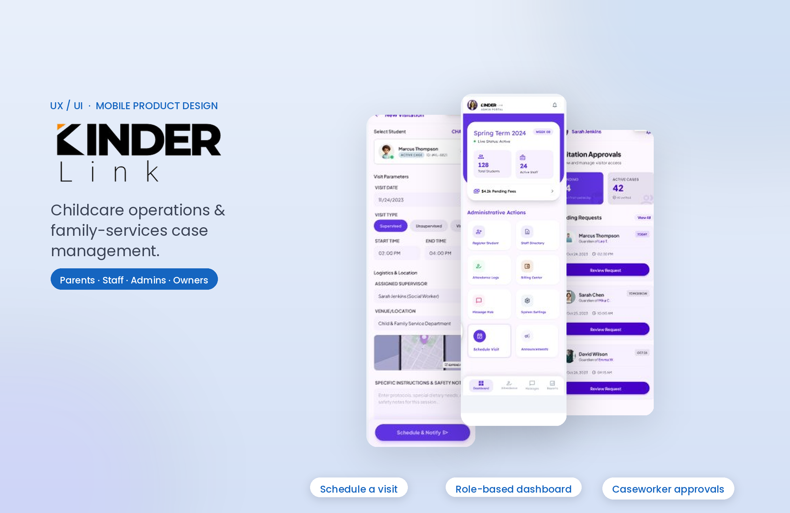

Case Study · UX/UI & Frontend Design
One product. Four roles. Two emotional registers. Built to feel like it belongs to each person who opens it.
KinderLink is a mobile application built for childcare centers and family-services organizations — a single platform that serves parents, staff and teachers, administrators, and business owners, each with their own focused experience.
What makes KinderLink genuinely hard is that it can't just be one app split into tabs. A parent picking up their child and a caseworker documenting a family visit have nothing in common emotionally or operationally. The product has to feel right for both — at the same time, from the same codebase.
The Challenge
Most multi-role apps collapse under their own complexity — they try to serve everyone and end up serving no one well. KinderLink required a different approach from the first wireframe.
Users & Roles
Rather than designing one interface and gating features by role, I designed each role's experience as a distinct surface — same design system, different information architecture, different emotional register.
Process & Approach
"You can't design for four roles by imagining four users. You have to design for four contexts — because context is what changes what people need from a screen."
Key Screens & Decisions

Outcome
KinderLink's frontend design is complete — every role dashboard, every key screen, every empty and filled state, every interaction variant. The design system in Figma is build-ready: components are annotated, tokens are documented, and handoff specs are attached to every frame.
The project demonstrates what it looks like to design for genuine complexity without defaulting to complexity. Four distinct roles. Two emotional registers. Dozens of multi-step workflows. All of it resolved into an app that, for each person who opens it, feels like it was made for them.
Designing KinderLink also sharpened my ability to think in systems under product constraints. When every design decision affects four roles and two registers simultaneously, you have to hold more context than a typical single-audience product demands — and you have to build a design system that can carry that weight without becoming rigid.
Status note: I designed the full frontend and UX/UI; the backend is in active development by the engineering team. The Figma file linked above reflects the complete, build-ready design handoff.
What's Next
Once the backend reaches a testable state, three design phases are queued.